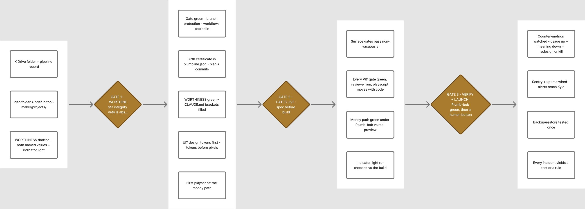
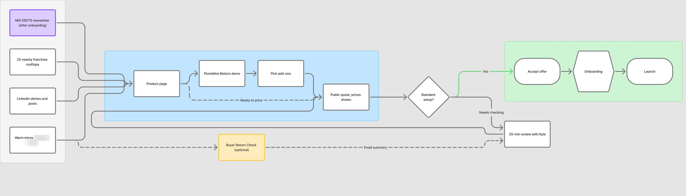
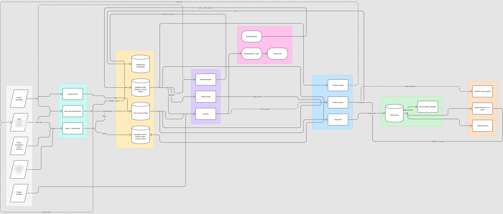
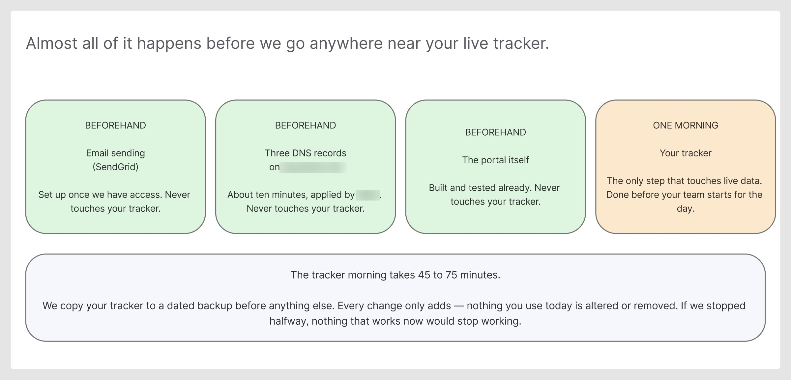

How a build runs
Every build follows the same path, from the first call to the month after handover. Each step below says what happens, what you get, and shows a real example from a real project, with client details blurred. If your Visionary, your EOS Implementer or an advisor sent you here, it works the same way. Want a head start? The Orchestrator maps what is stuck before we talk, for free.
Book the free 30-minute call Prefer email? kyle@plumblinestudio.devYou describe the work that eats your week. I ask how it runs today, who touches it, and what it costs you when it goes wrong.
You get: a straight answer on whether it's worth fixing, and whether I'm the right person to fix it.
$500–$2,000 · credited toward the build
I map how the work actually moves today, where time and money leak, and what your current tools can already do. Every conversation is sorted into facts, decisions and open questions, so nothing said in a meeting is lost.
You get: a written verdict and the first fixes in order, with what each one is worth. It's yours to keep, whether or not we build.
Before the build starts, we agree a short list of conditions, each one either true or not, and a fixed price. New ideas that come up mid-build are parked and quoted separately, so the price doesn't drift.
You get: the list and the quote. Most case studies on this site show their list as it stands today, with what's still open marked open. See one →
Each step is priced before it starts and billed in advance: the diagnostic, then the build at the price on the one-page scope. Work starts once it's paid. Changes are quoted in writing and approved before work starts. Outside costs, like hosting or paid services, are named in the scope and paid by you directly.
You get: no surprises on the invoice, because there's nothing on it you didn't approve first.
Every project follows the same path, with three gates a person has to pass: is it worth building, is the spec written before the code, and does a person press launch. The map shows where your project is at any moment.

When it's useful and we've agreed it in the scope, you see a working demo with sample data early, so decisions get made on something you can click, not a description. Not every build needs one.

The schedule is the one agreed with the price, with your review time and any outside dependencies counted in. AI does a lot of the drafting, checking and record-keeping; every change still passes the same automated checks and a person's review before it's merged. Nothing is sent, published or paid in your name by an AI. You get a short written status note every week.

It has to work before you sign off; that's one of the written conditions. Switching on is planned step by step, and your team gets plain-language notes and a walkthrough.

You get: the running tool, the keys to it, and the notes to run it without me.
$300–$2,000 a month · optional
Automations break when the tools around them change. The care plan keeps yours running, with named deliverables each month: what was checked, what was fixed, what changed. Never a vague retainer.
Questions